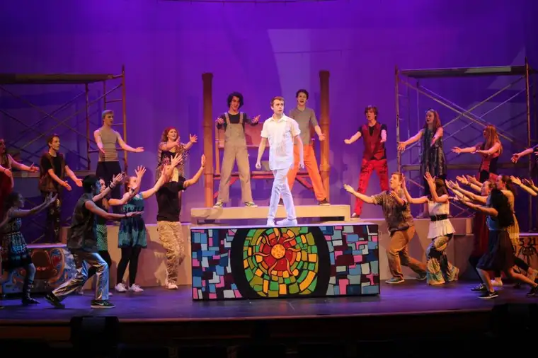
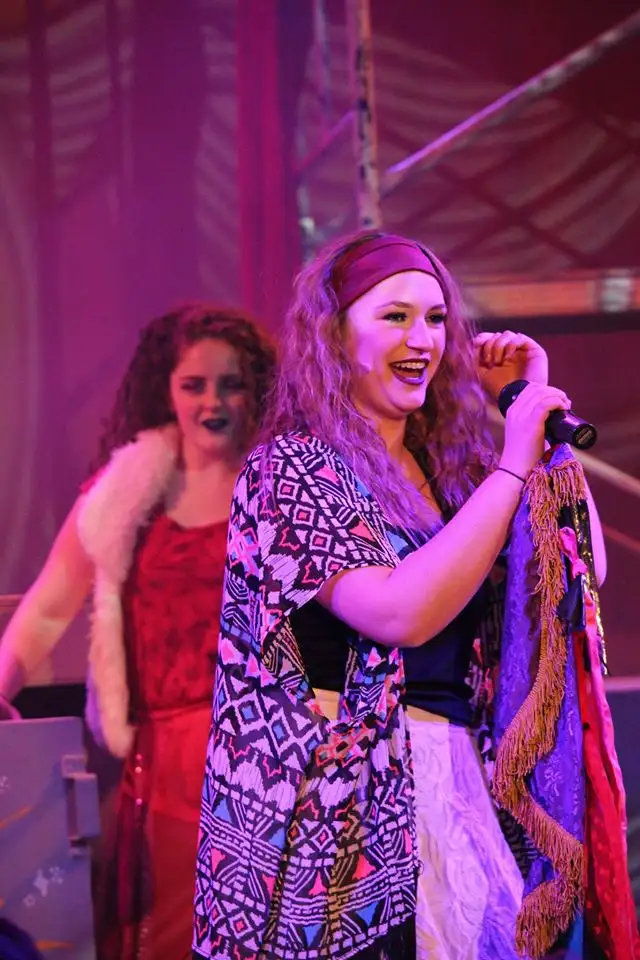
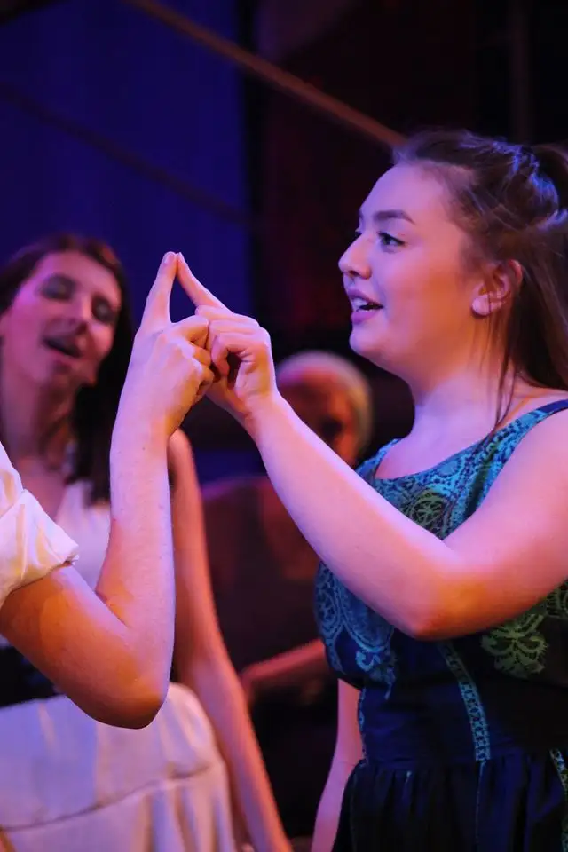

At around age 4, our middle child would sneak out of her bedroom, drawn by a simple melody being plunked out on ebony and ivory.
I’d be there at the piano in the dark, my sheet music lit by a small light, rehearsing notes for my singing role at next morning’s Mass, while the kids — or so I thought — slumbered.
Hearing a quiet brushing against the wall, I’d catch her, brown eyes beaming wide and wistful, a shy smile on her face.
My music wasn’t anything glorious but it had lured her, and I couldn’t help but wonder what was stirring in her little soul.
In first grade, she and her sister, a few years older, sang a duet for our school’s Advent program. Our daughters’ wee voices melded like angels as they stood together, their peers behind them, sweet faces bright, our hearts lurching.
It was a God glimmer letting us know he lives within them, and is at work, molding their tender spirits for his glory.
In fifth grade, she played Sakakawea in an elementary musical, and for years, with her godmother leading, leapt through dance class until the studio closed sometime during middle school.
Her sister surged ahead, developing her rich lilting voice, making us so very proud. But that middle girl with the big brown eyes went mostly quiet. For years, we didn’t hear any songs emanating.
Adolescence had made her a complete mystery.

Then this year, her junior year, arrived, and with encouragement from friends, she auditioned for Shanley’s spring musical, “Godspell,” earning a part in the cast, and the solo, “Day by Day.”

Our girl came and went until the rehearsal schedule became so demanding that she mostly went. Finally, opening night arrived, and, excitedly, we found our spots in the auditorium, praying and waiting.

As “Day by Day” began, our hearts quickened and our breathing slowed as we beheld her on stage. Was that really our daughter singing in such lovely tones? “Day by day, oh, dear Lord, three things I pray…”

Overwhelmed, I sensed God swooping down and whispering, “See, I am here. Did you doubt?” Witnessing this beautiful soul-burst of our own child was delightedly unexpected, a gift hard to measure. “…to see thee more clearly, love thee more dearly, follow thee more nearly, day by day.” God often moves quietly, and sometimes in hidden ways, but he’s moving all the same.
The performance was all-around memorable, but I’ll never forget the moment my husband and I clasped hands and, silently, celebrated a small victory.
I’m left, too, with words from another song that night. “All good gifts around us, are sent from Heaven above…I really want to thank you Lord.”
[For the sake of having a repository for my newspaper columns and articles, I reprint them here, with permission, a week after their run date. The preceding ran in The Forum newspaper on April 1 2017.]
Special note: Click here to find a still photo collage created by Lee Hoedl, with Beth singing “Day by Day” from the Friday performance of Shanley High School’s “Godspell” on March 24, 2017.